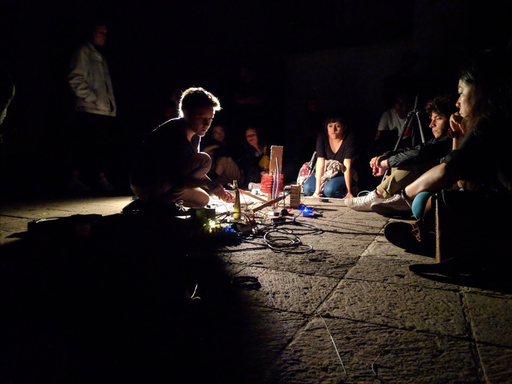
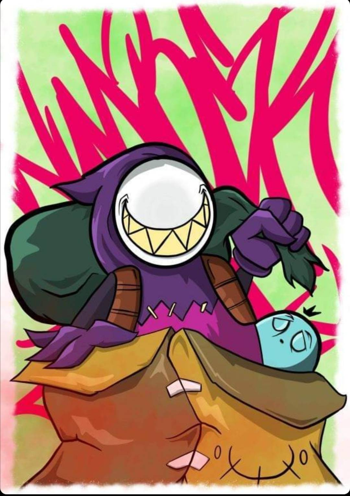

OPENING LIVE PERFORMANCE : Sunday 10th July
FERVĒRE (2022) by Una Lee

Completing her mini residency at dai hall, Lee will present
site-specific piece FERVĒRE, informed by walls and air in the space.
FERVĒRE consists of manifold formats and elements including spoken
voice, electronic music, live performance and textual score,
addressing a particular entanglement of racism and sexism on Asian
female bodies with reference to the real-life events of Atlanta Spa
Shooting and the case of artist Theresa Hak Kyung Cha. Lee thematises
homophonic translation and wild fermentation as metaphor for survival
of trauma, ‘misheard voice’ and tells a story about a woman rising up
to living again after a horrendous experience of violence. FERVĒRE
examine ways of listening to languages and politics of inclusion,
interrogating a diversity in languages through artistic context,
encouraging audiences to reflect their own current cultural and
political heritage. Supported by the Minority Ethnic Artists Programme
by Arts Council Northern Ireland.
Una Lee is an artist working with sounds, stories and sensations. She
is in perpetual pursuit of found sound and ways for alternative
storytelling. She sings, narrates, writes stories, collects field
recordings and makes things. She also composes and designs her own
live and/or fixed performances and intervention scenarios. Most of her
works, whilst being primarily sound-based, incorporate
interdisciplinary aspects such as performance art, visual art and
theatre practice with interest in exploring time, memories,
representations, human condition and ecology. She is native of South
Korea and holds a MA and PhD in Sonic arts from Queen's University
Belfast. She is a recipient of The Oram Awards 2020.
www.unalee.org
Exhibition : waste ethos – recycle, regenerate, repurpose
Monday 11th – Sunday 17th July
Opening: Sunday - Wednesday: 11:00 - 16:00 Thursday - Sunday: 11:00 -
15:00
Group exhibition by Anne-F Jacques, Yonago Tadashi, Muku Kobayashi &
Bunchi in collaboration with Octopus Collective.

Anne-F Jacques: Incomplete Cleaner (2022). Recycling an old washing
machine was a starting point for Anne-F and her collaborator Ryoko Akama
whose approach was to experiment on a sculptural work they had never
done before. The idea of this installation is the reuse of found
materials and reawakening of meanings of these objects which are placed
for a temporary period of time in a new environment. In this, sound,
vision and architectural experience is equally important alongside a
joyous humour. Each micro kinetic movement that seems unnecessary is
inevitable for others to become alive, which is how any ecosystem is
operated in our world.
Anne-F Jacques is a sound artist based in Montreal, Canada, interested
in amplification, erratic sound reproduction devices & construction of
various contraptions and idiosyncratic systems. Her particular focus is
on low technology, trivial objects and unpolished sounds.

Bunchi: FM 97.6 - 98.9 MHz “A sound sculpture about finding a radio
station that I used to listen to regularly. The signal stopped in
between 97.6 - 98.9 MHz. This is a space time.”
CHAN cho kiu Bunchi (b.1990, Hong Kong) graduated from the Academy of
Visual Arts of the Hong Kong Baptist University and currently lives and
works in Japan. Her strengths are getting lost, walking, collecting
"natural objects" produced by humans, then revealing movement and
dialogue under the surface to imagine the invisible thread of all
things. She works primarily in painting and mix-media installation. Her
exhibitions include "10 Years of ASP “ Soundpocket, Hong Kong (2021);
“Sayonara Mark II” Toyota MarkII, Tokyo (2021); “Münster Sculpture
Project in Sagamihara 2018” Kanuma Park, Tokyo (2018); and solo
exhibition "Housewife Math” The Steak House Doskoi @ XYZ collective,
Tokyo (2022); “Object Conference” Art Center Ongoing, Tokyo (2017).

Muku Kobayashi: Nyuu Fyu A machine is in motion that seems to have some
kind of function. Every time it is driven, it makes a noise, but the
immediate sound has an unclear relationship to the purpose of the
machine. The variations in movement are partly controlled and partly
left to the behaviour of the objects. Each machine has the same shape
and mechanism, but each seems to work stand-alone. On the other hand,
their organic movements seem to have an ecosystem linked to each other.
The machine's shape, colour and movement seem designed, though. Just as
product design is designed with a clear intention for a certain matter,
design must have a purpose. On the other hand, these machines continue
to operate with their purpose suspended in the air.
Muku Kobayashi Born in Tokyo in 1992. Currently based in Kyoto, Japan.
Completed Tama Art University’s Graduate Program in Information Design
in 2017, and the Master’s course in the Department of Sculpture at the
Graduate School of Arts, Kyoto City University of Arts in 2019. He
creates works by observing the manifestation and deterioration of the
characteristics of things when they are inserted into a certain
organization or institution, or when they become complicit in the
operation of such entities.

Yonago Tadashi: Things which make a sound sounded. Even if there was no
any things which can listen it. Before we have appeared, and after we
have disappeared even.
Yonago Tadashi is a trombone player, improviser, composer, engineer and
maker of sound objects and instruments. He was a member of electronic
ensembles SjQ and SjQ++. The latter received an Award of Distinction at
Ars electronica 2013, in the Digital Musics and Sound Art section. Born
in Japan, 1980.
FREE Graffiti Workshops
Thurs 13th & Fri 14th July. 15:00 – 19:00 with Shame 13th & Number Zwei
Come down to a 2-day graffiti workshop at dai hall!
Graffiti is an amazing way to make us think and turn ideas/messages into
illustrations. Local graffiti artists Shame 13th & Number Zwei will show
you how to use graffiti tools such as paints and sprays & various
techniques. You are going to collaborate together to fill one side of
our gallery and skate ramps into a graffiti street art!
Spray paints, masks and gloves are all provided. No experience
necessary. Over 11 years only.
To limit the number of participants, please
register in advance.
Shame 13th is a graffiti writer and illustrator. Born and bred in
Huddersfield, West Yorkshire, who’s been at it since 1994.

Number Zwei - graffiti inspired character designer from Huddersfield,
West Yorkshire. Finished art college wanting to be a children’s book
illustrator. After being rejected from several universities, is now
selling his work and mural painting services all over West Yorkshire and
beyond.